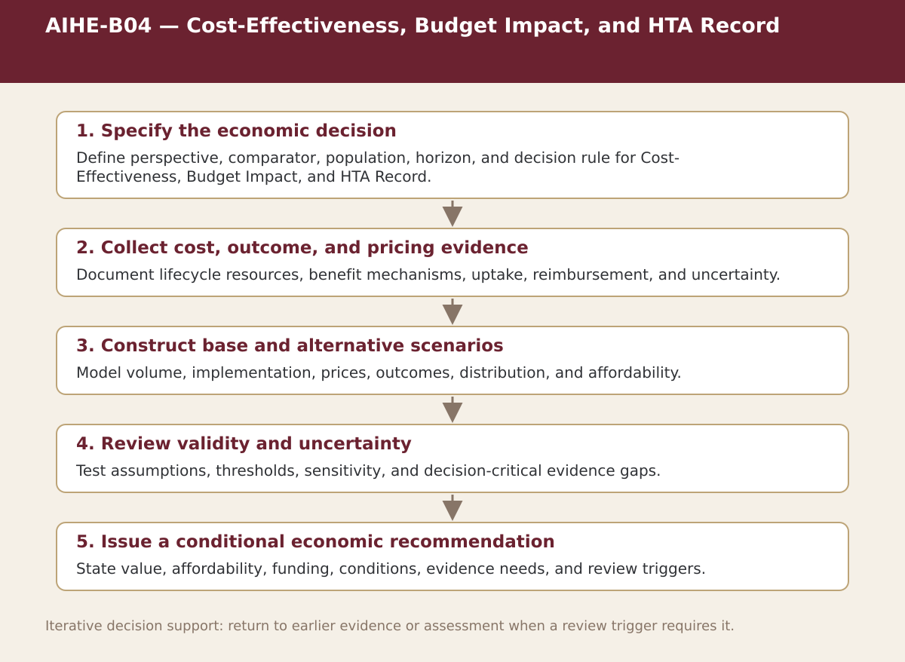

Core · Chapter 7
AIHE-B04 — Cost-Effectiveness, Budget Impact, and HTA Record
Summarize cost-effectiveness, affordability, distribution, HTA, reimbursement, adoption conditions, uncertainty, and recommendation.

Process steps
| Step | Purpose | Review |
|---|---|---|
| 1. Specify the economic decision | Define perspective, comparator, population, horizon, and decision rule for Cost-Effectiveness, Budget Impact, and HTA Record. | Proceed, revise, escalate, restrict, or stop as appropriate |
| 2. Collect cost, outcome, and pricing evidence | Document lifecycle resources, benefit mechanisms, uptake, reimbursement, and uncertainty. | Proceed, revise, escalate, restrict, or stop as appropriate |
| 3. Construct base and alternative scenarios | Model volume, implementation, prices, outcomes, distribution, and affordability. | Proceed, revise, escalate, restrict, or stop as appropriate |
| 4. Review validity and uncertainty | Test assumptions, thresholds, sensitivity, and decision-critical evidence gaps. | Proceed, revise, escalate, restrict, or stop as appropriate |
| 5. Issue a conditional economic recommendation | State value, affordability, funding, conditions, evidence needs, and review triggers. | Proceed, revise, escalate, restrict, or stop as appropriate |
Status. This process map is a navigation and decision-support aid. Adapt it to the relevant jurisdiction, institution, population, workflow, technology version, evidence cut-off, and accountable authority.